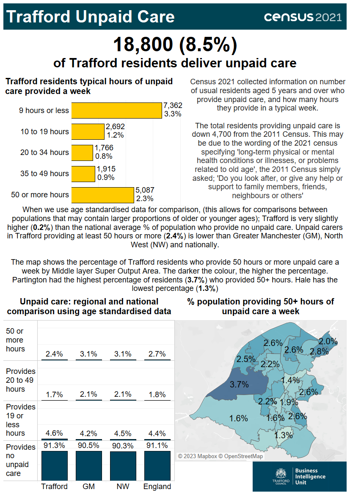

Source: Office for National Statistics.

The infographic contains statistics released on from the census taken on Sunday 21 March 2021, regarding residents providing unpaid care. The Census 2021 collected information on the number of usual residents aged 5 years and over who provide unpaid care, and how many hours they provide in a typical week. In total 18,800 residents in Trafford (8.5% of the population) deliver unpaid care. Trafford residents typical hours of unpaid care provided per week are 7,362 (3.3%) providing 9 hours or less, 2,692 (1.2%) providing 10 to 19 hours, 1,766 (0.8%) providing 20 to 34 hours, 1,915 (0.9%) providing 35 to 49 hours and 5,087 (2.3%) providing 50 or more hours. The total number of residents providing unpaid care is down 4,700 from the 2011 Census. This may be due to the wording of the 2021 Census specifying 'long-term physical or mental health conditions or illnesses, or problems related to old age'. The 2011 Census simply asked: 'Do you look after, or give any help or support to family members, friends, neighbours or others?'. When we use age-standardised data for comparison, (this allows for comparisons between populations that may contain larger proportions of older or younger ages), Trafford is very slightly higher than the national average percentage of population who provide no unpaid care (91.3% compared to 91.1%) as well as being higher than Greater Manchester (90.5%) and the North West (90.3%). It is a similar situation for residents providing 19 hours or less of unpaid care, with Trafford (4.6%) slightly higher than Greater Manchester (4.2%), North West (4.5%) and England (4.4%). However, unpaid carers in Trafford providing 20 to 49 hours of unpaid care (1.7%) is slightly lower than Greater Manchester and the North West (both 2.1%) and England (1.8%). The same is true of residents providing at least 50 hours or more of unpaid care, with Trafford (2.4%) lower than Greater Manchester and the North West (both 3.1%) and England (2.7%). When comparing areas within Trafford, Partington had the highest percentage of residents who provided 50 or more hours of unpaid care (3.7%) compared with Hale which has the lowest percentage (1.3%).